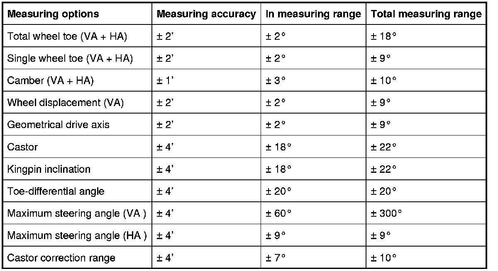
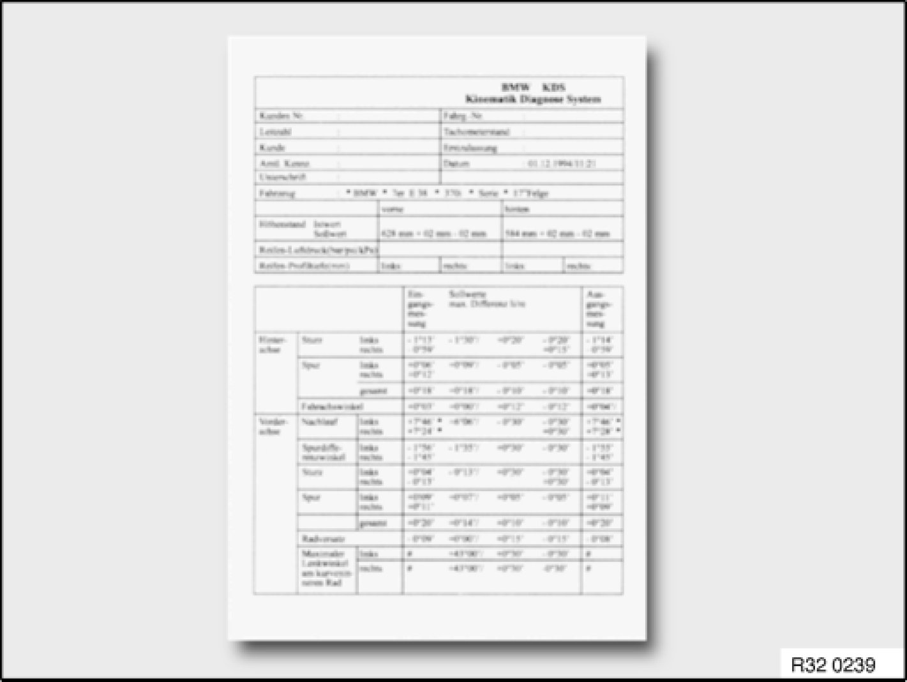

7. Wheel Alignment / Procedure
7. Wheel Alignment / Procedure
7.1 Measuring options
An overview of all measuring options and values (VA = front axle, HA = rear axle) is shown below.

Note:
The measuring accuracy details only apply when using the precision rotating and sliding plates as well as the BMW quick-acting clamps.
7.2 Preparatory work
Before commencing the measurement, preparatory work must be carried out at the measuring area and on the vehicle (see BMW KDS operating instructions). Preparatory work includes:
- Easy-running rotating and sliding plates
- Aligning the rotating and sliding plates in relation to the track width and wheelbase
- Centering the vehicle on the plates
- Applying the parking brake
- Removing the lock pins on the plates to prevent tension in the chassis under loading
- Checking the rim and tyre size, tread depth, tyre pressure, steering wheel play, wheel bearings and condition of suspension and shock absorbers
- Fastening the measuring equipment to the wheels
- Loading the vehicle according to BMW KDS specifications
- Rock the vehicle firmly with the brakes released to ensure a stable centre position
- Lock the service brake using the brake clamping device
7.3 Initial / final measurement
This measurement can be carried out as a program-guided measurement in the same way as any subsequent adjusting work and the final measurement. The sequence of the chassis measuring points to be called up is specified and controlled by the system software. The individual steps comprise:
- Driving straight ahead to correctly record the wheel toe and camber values for the rear axle
- Steering routine for recording the castor, kingpin inclination and toe-differential angle
- Recording the wheel toe and camber of the front axle (adjust the steering centre point in advance)
- Steering routine for measuring the maximum steering angle on the left/right
- Checking the overview of measured values with the setpoint and actual comparison of all measured values
7.4 Printing out the data

The report printout from the integrated DIN A4 printer is subdivided into three sections:
- Header lines with customer and vehicle identification data --> the customer data entered before beginning the measurement as well as vehicle data are printed out here.
- Centre section with vehicle data --> this includes the make, type, model and vehicle model year defined when the setpoint data record was selected. The values previously measured for height level, tyre pressure and tread depth are also printed in this section.
- The end section with all vehicle alignment values comprises the 3 columns initial measurement, setpoint values and output measurement. The measured values are recorded separately in these three columns.